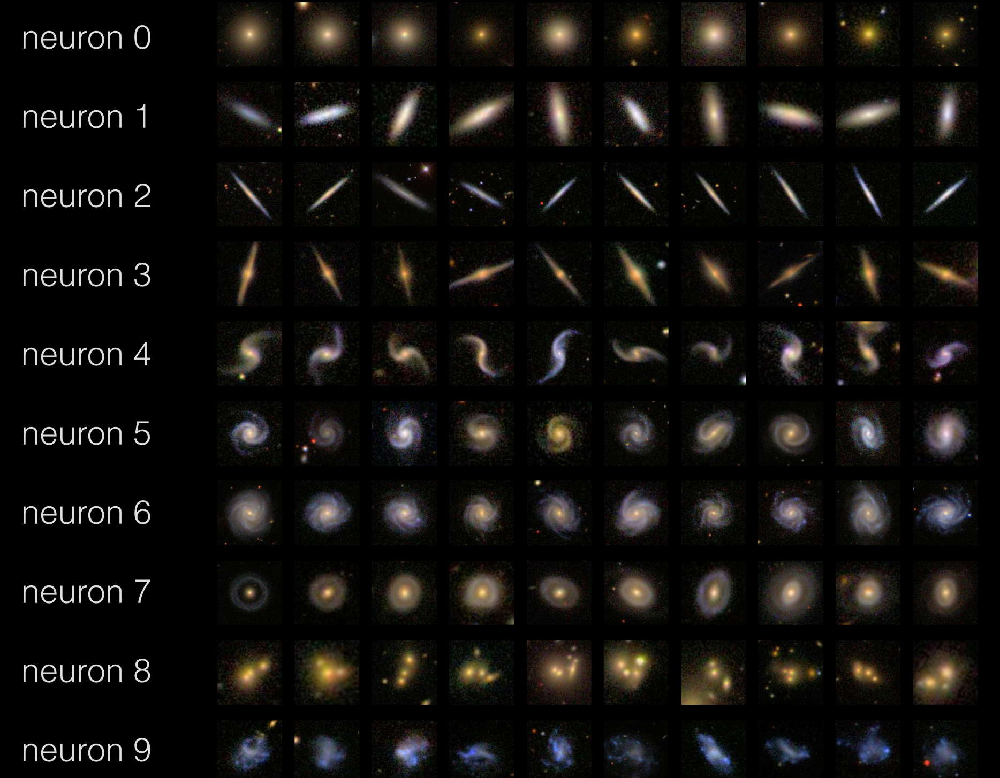
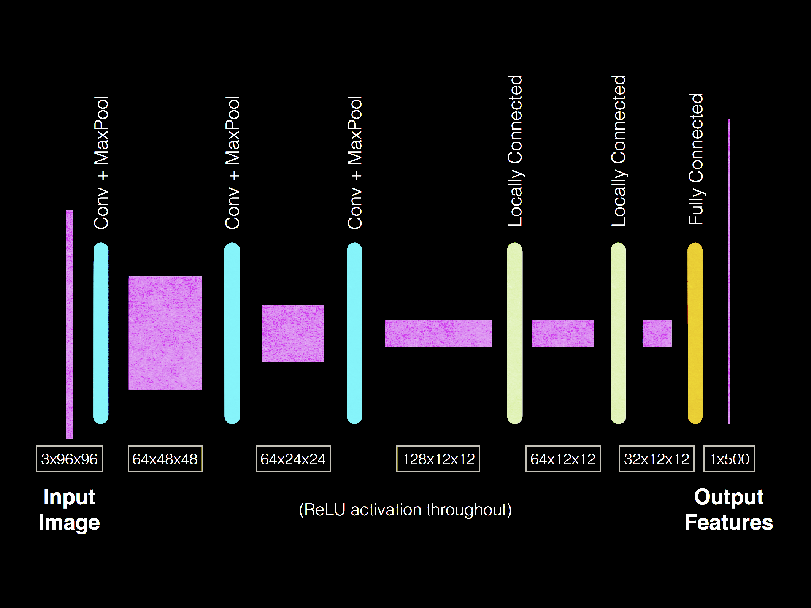

In early 2014 there was Kaggle competition to classify galaxy morphologies based on images from the Sloan Digital Sky Survey.
I constructed a GPU-trained, convolutional neural network for this analysis. The same basic technology is used in a number of commercial image and audio processing applications, such as Google's system for extracting addresses from their StreetView imagery.
I ended up coming in 7th place. The winner, who also used a convolutional neural network, has a great write-up. I used Alex Krizhevsky's cuda-convnet code, but have repeated some of this work using the Caffe library. See my Caffe code here.
I gave a short talk on this work at the "Computing the Universe 2015" conference at UC Berkeley.In each row below I show the galaxies from the unlabeled validation set that maximize the response of a particular neuron located at the end of the network. You can see that a variety of complex morphological features were learned by the network.
I used a (3 convolutional layers + 2 locally-connected layers + 1 fully-connected layer) architecture, with dropout regularization in the LC and FC layers:
Using the same dataset, I made a video of 1000 nearby spirals. The idea was that consecutive frames would show very similar galaxies viewed from slightly different viewing angles, and that the video would slowly explore the "morphology space" of nearby, spiral galaxies. The video switches between galaxy type more quickly than I'd like, but I still think it came out pretty well.
I made a video of 1000 nearby spiral galaxies imaged by the Sloan Digital Sky Survey (SDSS). The sequence of frames is determined using information about the galaxies' morphologies and spatial similarity.
Each one of these galaxies is about the size of our galaxy, the Milky Way, and contains about 100 billion stars. And this is only a tiny, tiny fraction of the galaxies out there. If we upgraded this movie to include the ~100 billion galaxies in the observable universe, the playback time would be about 250 years.
- I started with the galaxies in the Galaxy Zoo competition on kaggle.
- I selected the top ~1000 "most spiral-like" from the ~60,000 galaxies in the training set.
- I chose some galaxy as the first image. To choose the sequential images, I first found the 100-closest neighbors in the 37-dimensional "Galaxy Zoo Morphology" space, then selected the closest neighbor among those in "variance-normalized-image" space.
- I used ffmpeg to convert the images to a movie.